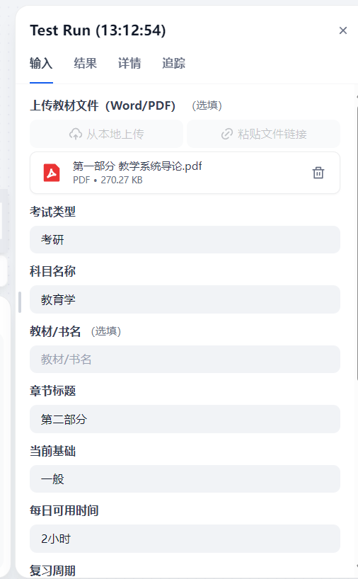
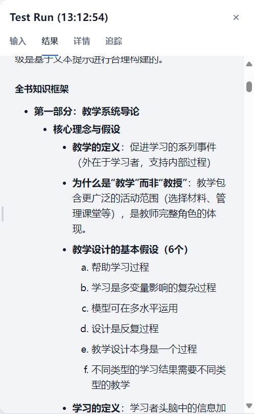

问题背景
教材型考试用户并不缺资料，真正的困难是资料太多、重点不清、笔记整理耗时，背诵、自测和复习计划又分散在不同工具中。
通用对话模型可以总结文本，但单轮 Prompt 同时承担多项任务时，容易出现结构缺失、答案错位和计划脱离用户时间等问题。
首版最需要验证的不是长期学习管理，而是能否把一段教材稳定转化为可执行的复习材料。
产品判断
为什么选择 Workflow
复习报告是一条连续链路。后续任务依赖前一步结果，自测题需要覆盖已提炼的重点，答案解析必须对应已有题目，计划还要受到用户基础与时间约束。
章节解析先建立内容框架
重点提炼区分理解与记忆
背诵笔记转化为可复习表达
自测题只生成题目
答案解析逐题严格对应
复习计划结合时间与基础
MVP 边界
首版包含章节解析、重点、背诵笔记、自测题、答案解析和复习计划。账户体系、整本教材解析、真题知识库、扫描版 PDF 自动 OCR 和 Word 导出暂不进入 MVP。
方案设计
用户输入考试类型、科目、教材信息、章节正文、当前基础、每日时间和复习周期。六个节点依次加工内容，最终汇总为结构化学习报告。

Prompt 约束
- 每个节点只完成一个明确任务。
- 输出格式固定，便于下游节点读取。
- 要求基于用户材料，减少凭常识补写。
- 题目输出作为答案节点的显式输入。
- 复习计划必须结合用户基础、每日时间和周期。
Vibe Coding
我使用 Codex 等 AI 工具辅助梳理文档、检查 Prompt、整理仓库和定位问题，但产品范围、节点职责、变量依赖、结果验收与迭代优先级由我判断。
- 从用户连续任务出发，定义核心问题。
- 限定 MVP，优先验证材料到复习报告的链路。
- 拆解 PRD、Workflow、Prompt、测试、Demo 和项目文档。
- 借助 AI 执行重复工作，并逐项检查实际结果。
- 根据运行日志和测试结果调整流程。
Vibe Coding 的价值不在生成了多少代码，而在能否把模糊想法拆成可执行任务，并对最终结果负责。
测试与迭代
我使用约 270KB 的真实教育学 PDF 完成一次端到端测试。Workflow 能读取材料并生成知识框架、重点和复习相关内容。


关键 bad case
- 变量未正确插入时，模型会反问用户补充材料。
- 答案节点没有引用题目时，题目与答案可能错位。
- 整本教材输入过长时，输出容易泛化。
- 扫描版 PDF 本质是图片，需要先 OCR。
- 多节点调用会消耗模型额度，演示前需要检查可用性。
成果与限制
6套独立节点 Prompt
1次真实 PDF 端到端测试
当前已完成可运行的 Dify Workflow、Web App、DSL、PRD、Prompt 文档、测试报告、迭代记录和公开 GitHub 仓库。
项目仍处于原型验证阶段。测试样本数量不足，未接入真题知识库，长文本和扫描版 PDF 仍需要预处理，Dify Cloud 额度也会影响公开演示稳定性。
下一步
- 补充考公、教资等不同教材和异常输入测试。
- 建立更清晰的评价维度与测试记录表。
- 增加长文本分段和文件类型判断。
- 根据真实反馈再判断知识库、错题复盘和进度能力的优先级。